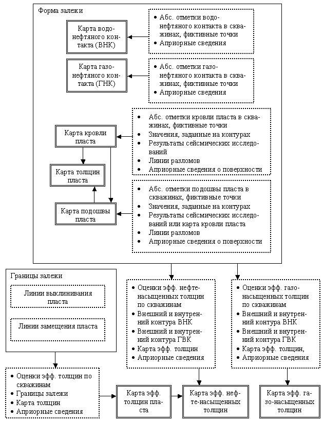
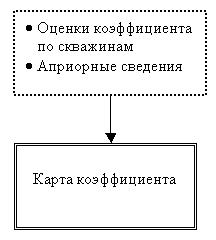

Геологическое моделирование в пакете
surfit
Классификация исходных данных по степени их достоверности необходима для адекватного учета этих данных при построении карт - математических моделей, описывающих геологические объекты. Понятно, что при построении карт геолого-геофизических параметров наиболее достоверные данные должны иметь ''больший вклад'', нежели менее достоверные.
Для классификации исходных данных по степени их достоверности рассмотрим рис. 2. В прямоугольниках, обозначенных пунктирной линией описываются исходные данные, служащие для построения карты того или иного геолого-геофизического параметра. Исходные данные описываются по мере убывания их достоверности и информационной значимости. Рассмотрим более подробно исходные данные, участвующие в построении каждой карты.

рис. 2.
Основной исходной информацией при построении карты поверхности водонефтяного контакта (ВНК), являются абсолютные отметки водонефтяного контакта, замеренные в скважинах.
К данным, той же достоверности, что и результаты замеров в скважинах, исследователь может относить точки с фиктивными значениями в тех случаях, когда экспериментальных точек недостаточно для построения карты. Фиктивные точки - это дополнительные к экспериментальным точки, заданные исследователем из каких-либо более или менее правдоподобных соображений и которые исследователь считает данными той же достоверности, что и экспериментальные точки.
Для задания поведения поверхности в областях низкой плотности информации, помимо данных в скважинах, могут использоваться различные предположения о положении поверхности ВНК, например то, что поверхность мало отличается от константы в пределах залежи. Также могут использоваться и различные интуитивные представления о поведении поверхности, которые задаются в виде тренда - поверхности, грубо описывающей форму поверхности ВНК.
Здесь ситуация аналогична построению карты ВНК, с той лишь разницей, что в скважинах замеряются абсолютные отметки газонефтяного контакта.
Карты кровли и подошвы пласта описывают геометрическое место пласта в пространстве, описывают его форму. При построении карты кровли зачастую имеются только абсолютные отметки кровли пласта, замеренные в скважинах. Эти данные являются наиболее достоверными, т.к. получены эмпирическим путем. Как и в случае карт ВНК и ГНК, при построении структурных карт могут применяться фиктивные точки.
В случаях, когда структурная карта строится с учетом ранее построенной карты, представленной в изолиниях, в качестве исходных данных могут быть заданы эти изолинии как пространственные кривые с заданными на них значениями. Эти данные будем считать менее достоверными, нежели замеры, произведенные в скважинах и заданные в фиктивных точках. Структурная карта, построенная раннее и представленная в виде изолиний может доуточняться новыми данными, полученными в результате проведенных исследований вновь пробуренных скважин.
В дополнение к скважинным данным могут быть предоставлены результаты сейсмических исследований, представленные в форме грида (прямоугольная равномерная сетка, с заданными в узлах значениями). Этот грид отражает характерные наклоны, которые имеет картируемая поверхность и также должен учитываться при построении карты. Картируемая поверхность, рассчитанная с использованием "сейсмического" грида должна удовлетворять двум требованиям: во-первых наиболее точно аппроксимировать замеры абсолютных отметок, произведенных в скважинах (это обеспечивает приоритет скважинных данных над данными, полученными в результате сейсмических исследований). Во-вторых, по возможности наиболее точно повторять форму поверхности, полученной в результате сейсмических исследований.
При построении структурных карт могут задаваться линии разломов, или, как их еще называют - линии структурных нарушений. Линии разломов - это линии, вдоль которых произошло смещение геологического пласта. Информация о линиях разломов может быть двух типов: в первом случае о разломе известно только его геометрическое место на карте, во втором - на разломе задаются относительные смещения пласта. Информация о расположении линий разломов получаются несколькими способами: из анализа структурных карт кровли и подошвы пласта, построенных без учета разломов, из анализа геологических разрезов, построенных по соседним скважинам. Еще один способ - анализ ''сейсмической'' карты. Исходя из способов получения информации о линиях разлома, отнесем их к менее достоверной информации, нежели результаты исследования скважин и результаты сейсмических исследований.
При построении структурных карт (и карт других параметров) существуют области с низкой плотностью информации. О поведении картируемого параметра в этих областях могут иметься различные априорные сведения и предположения. Способов учета такого рода информации великое множество - от построения адаптированной сетки, по которой в дальнейшем будет строиться карта, до записи этих сведений в математической форме в виде функционалов. Эти сведения считаются наименее достоверными и должны учитываться в последнюю очередь. При построении структурных карт в качестве таких априорных знаний можно предполагать, что картируемая поверхность мало отличается от некоторой константы или плоскости. Тем самым предполагается, что в период формирования залежи структурная поверхность имела форму некоторой плоскости, которая была деформирована за длительное время существования этой залежи. Иногда используют предположение о том, что поверхность напоминает ''купол''.
Построение карты подошвы пласта аналогично построению карты кровли. Отличие может заключаться в том, что карту кровли зачастую используют в качестве вспомогательных данных при построении карты подошвы. Достоверность карты кровли и способ ее учета, такой же, как был описан для результатов сейсмических исследований.
Карта общих толщин пласта строится как разница карт подошвы и кровли пласта.
Основной информацией, используемой при построении карты эффективных толщин пласта являются оценки эффективных толщин, полученные из анализа информации по скважинам. Значение эффективной толщины получается суммированием толщин всех пород-коллекторов, вскрытых скважиной, т.е. пород, обладающих такими геолого-физическими свойствами, которые обеспечивают физическую подвижность нефти, газа или воды в пустотном пространстве породы.
Помимо оценок параметра в скважинах, также используются данные о границах залежи, которые определяются линиями выклинивания и замещения коллекторских свойств пласта. При выклинивании продуктивных отложений образуются линии выклинивания, за пределами которых эффективные толщины равны нулю. Потерю пластом коллекторских свойств, при сохранении его толщины называют замещением коллекторов, а соответствующую экранирующую границу - линией замещения коллекторов.
Положение линий замещения и выклинивания определяют по данным керна, промысловой геофизики и опробования о том, какими породами представлен пласт в каждой скважине. Т.к. линии замещения и выклинивания есть результат применения некоторого алгоритма к тем же скважинным данным, то их положение определяется с погрешностью. Поэтому информацию, которую несут линии выклинивания и замещения о строении залежи, будем считать менее достоверной по сравнению с информацией, полученной по скважинам.
Дополнительным ограничением на карту эффективных толщин является построенная ранее карта общих толщин - эффективные толщины не должны превышать общих толщин.
При построении карт эффективных толщин могут использоваться различные априорные сведения. Например, эти сведения могут быть описаны трендом, представленным в виде грида. Тренд в данном случае описывает характер изменения эффективных толщин в областях низкой плотности информации.
Для пород-коллекторов обычно рассматривают три вида насыщения - нефть, газ и вода. Построение карт эффективных нефте, газо и водонасыщенных толщин схоже, поэтому в дальнейшем будем рассматривать задачу построения карты эффективных нефтенасыщенных толщин.
При расчете карты эффективных нефтенасыщенных толщин пласта используются оценки соответствующих толщин, произведенные по результатам опробования скважин. Совместно с основной информацией для картопостроения, полученной "из скважин", используются:
- Внешние контуры ВНК, полученные пересечением поверхности ВНК с кровлей пласта.
- Внутренние контуры ВНК, полученные пересечением поверхности ВНК с подошвой пласта.
- Внешние и внутренние контуры ГНК, полученные аналогичным пересечением поверхности ГНК со структурными поверхностями.
- Карта эффективных толщин.
- Априорные сведения, заданные в виде тренда.
Внешние и внутренние контура ВНК разделяют залежь на три зоны: чисто-нефтяную (ЧНЗ), водонефтяную (ВНЗ), и водонасыщенную зоны. Построение карты в каждой зоне можно выделить в отдельную задачу: значения эффективных нефтенасыщенных толщин в чисто-нефтяной зоне должны совпадать со значениями эффективных толщин, а в водонасыщенной зоне должны равняться нулю. В водонефтяной зоне карта строится с учетом следующих ограничений, приведенных в порядке уменьшения достоверности:
- Значения нефтенасыщенной толщины, оцененные в скважинах.
- Значения нефтенасыщенной толщины, полученные на внутренних контурах ВНК - они должны равняться значениям эффективных толщин.
- Значения нефтенасыщенной толщины, полученные на внешних контурах ВНК - они должны равняться нулю.
- Априорные сведения об изменении нефтенасыщенной толщины в области низкой плотности информации, заданные в виде тренда (грид).
Алгоритм построения карты эффективных нефтенасыщенных толщин наиболее сложный из всех алгоритмов построения карт, т.к. в нем используются всевозможные типы исходных данных. Эти данные имеют различную информационную значимость и заданы на различных носителях: точках, кривых, площадях.

рис.3.
Построение карт различных коэффициентов очень схоже (см. рис.3). В качестве исходных данных участвуют оценки картируемого коэффициента, произведенные по результатам исследования скважин. Т.к. часто в расчетах карту какого-либо коэффициента заменяют константой, то используется априорное предположение о том, что коэффициент мало отличается от константы. Обычно рассматриваются задачи построения следующих карт:
- Карта коэффициента пористости.
- Карта коэффициента проницаемости.
- Карты коэффициентов нефте, газо и водонасыщенности.
В заключении отметим важность проведенной выше классификации исходных данных по степени достоверности. Основной проблемой при истолковании результатов построений, получающихся при применении различных методов гридинга, является определение той информации, которая была использована при картопостроении. Зачастую это сделать невозможно, или очень сложно - в зависимости от применяемого метода гридинга. Выбранный метод вносит в построение карты определенную информацию. В каком-то смысле ее можно считать исходной, т.к. вид карты будет зависеть от выбранного метода. Например, аппроксимации с помощью ступенчатых или гладких функций приведут к ступенчатой или гладкой поверхности. Подобного же рода информация закладывается при помощи построения адаптивной сетки, заданием весовых коэффициентов (значимости) для скважин.
В реализованном в surfit методе последовательной минимизации функционалов (ПМФ) вся исходная информация записывается в явной математической форме - в виде функционалов. Этот подход позволяет четко определиться с тем, на основе какой информации будет построена карта. В случае, если карта не удовлетворяет требованиям исследователя, необходимо выявить ту информацию, которая не была учтена при построении карты и, записав ее в виде функционала, включить в расчет. Приведенная классификация исходных данных используется в методе ПМФ для задания приоритета для каждого типа входной информации: сперва учитываются самые достоверные данные (обычно это результаты замеров в скважинах), затем следует менее достоверная информация (значения, заданные на контурах, тренды, априорная информация).